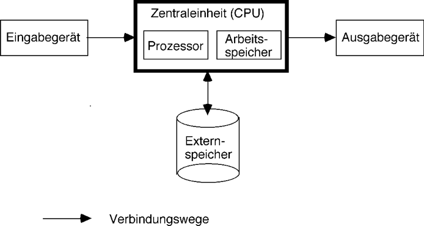
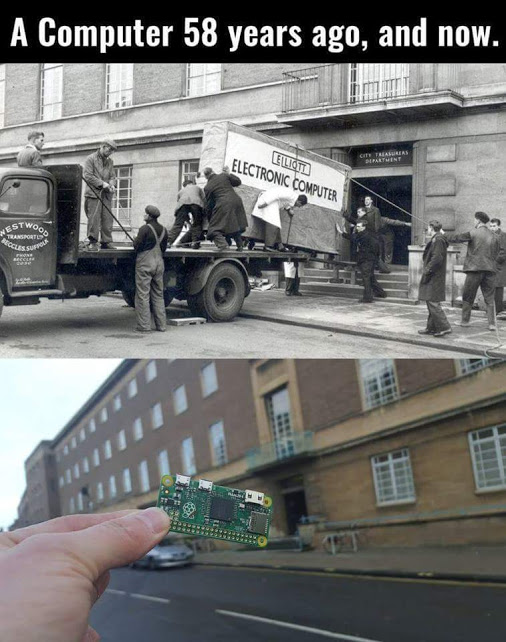
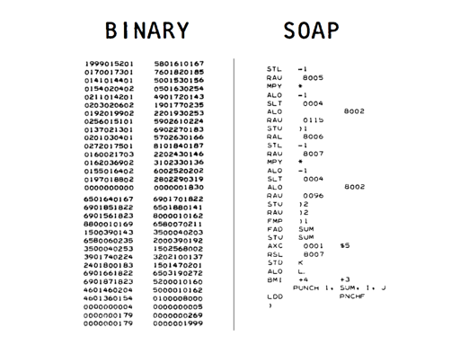
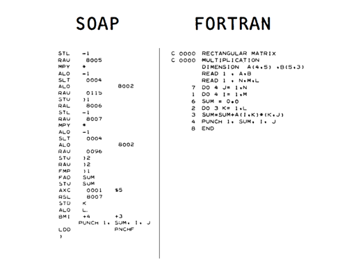
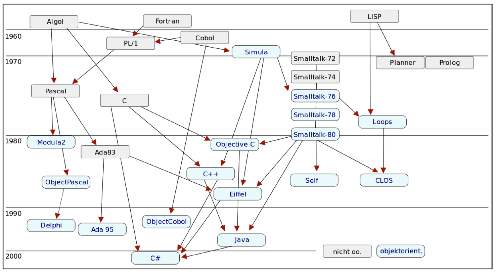
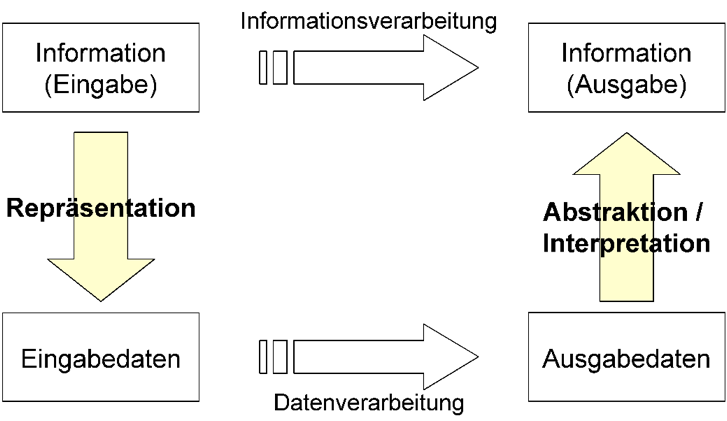
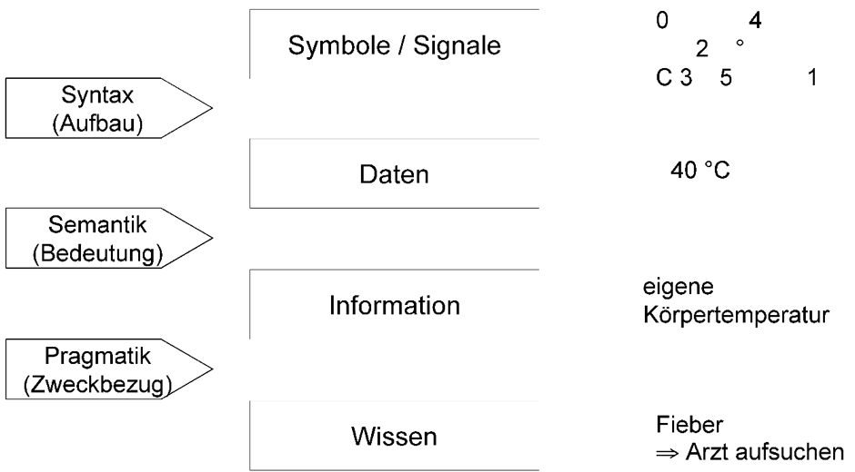

Einführung
Einführung in die Programmierung
Was ist Informatik?
Definitionsversuche
- Informatik := Infor/mation + Auto/matik
- Definitionen des Begriffs Informatik:
- Informatik ist das Fachgebiet der Informations- und Datentechnik
- Informatik ist die Wissenschaft von der Automatisierung menschlicher Arbeit.
- Informatik ist die Wissenschaft, Technik und Anwendung der maschinellen Verarbeitung, Speicherung und Übertragung von Information
- Informatik ist die Kunst, Komplexität zu meistern.
- Hauptteilgebiete der Informatik
- Gerätetechnik (Hardware, Mikroelektronik)
- Programmierung (Software)
Weitergehende Gliederung der Informatik
- Theoretische Informatik
- Technische Informatik
- Praktische Informatik
- Angewandte Informatik
Theoretische Informatik
- Automatentheorie
- Theorie der formalen Sprachen
- Theorie der Berechenbarkeit und Komplexitätstheorie
- Algorithmenanalyse
- Theorie der Programmierung
- Semantik von Programmiersprachen
Technische Informatik
- Digitaltechnik: Schaltnetze, Schaltwerke
- Hardware-Komponenten, insbesondere Prozessoren, Mikroprozessoren
- Mikroprogrammierung
- Rechnerorganisation und -architektur
- Schnittstellentechnik, Rechnernetze
Praktische Informatik
- Algorithmen, Datenstrukturen und Programmiermethoden
- Programmiersprachen und Übersetzer
- Verifikation von Programmen
- Betriebssysteme
- Echtzeitverarbeitung
- Datenbanksysteme
- Graphische Systeme
- Benutzungsoberflächen
Angewandte Informatik
- Informationssysteme
- Künstliche Intelligenz
- Digitale Signalverarbeitung
- Modellierung und Simulation (CAE)
- Rechnerunterstützter Entwurf (CAD)
- Rechnerunterstützte und rechnerintegrierte Fertigung (CAM, CIM)
- Textverarbeitung und Büroautomatisierung
- Wirtschaftsinformatik
- Industrie, Verkehr, Telekommunikation, Handel, Banken, …
- öffentliche und private Verwaltung: Behörden, Versicherungen
- Weitere Anwendungen
- Bildungsbereich und häusliche Umgebung
- Ingenieur- und Naturwissenschaften: Maschinenbau, Meteorologie, Umwelttechnik, Weltraumtechnik
- Human-, Sozial- und Geisteswissenschaften: Medizin, Kunst
- Datenschutz
Was ist Wirtschaftsinformatik?
- Wirtschaftsinformatik =
Planung, Realisierung und Einführung betrieblicher Informationssysteme
- Zwei Wege der Realisierung
- Anpassung von „Fertig-Software” für standardisierte Geschäftprozesse an die Erfordernisse des eigenen Unternehmens
- Entwicklung von Individual-Software für den optimalen Zuschnitt der Funktionalität an die Unternehmensanforderungen
- In dieser Veranstaltung: Vermittlung von Grundkenntnissen und Fertigkeiten der funktionalen Programmierung
Literaturhinweise
- Hartmut Ernst: Grundkurs Informatik, Vieweg, 2003
- Hans-Jürgen Appelrath, Dietrich Boles, Volker Claus, Ingo Wegener: Starthilfe Informatik, B.G. Teubner-Verlag, 2002
- Jörg Desel (Hrsg.): Das ist Informatik. Springer-Verlag, Berlin Heidelberg, 2001
Programme – Rechner – Programmiersprachen
Programme für Computer
Ein Programm ist eine Folge von Anweisungen (Befehlen) an eine Maschine (Rechner, Computer), die von dieser „verstanden” wird und damit ausgeführt werden kann.

Computer im Wandel der Jahrzehnte

- Ein iPhone enthält ca. 1 Milliarde Transistoren.
- Um diese Rechenleistung mit der Technologie der 1950er Jahre zu
bauen, bräuchte es:
- 1 Milliarde Elektronenröhren
- 170 vehicle assembly buildings, um sie unterzubringen
- 1 Terawatt Leistung, um sie zu betreiben
- das entspräche 500 2-Gigawatt-Kernkraftwerken für ca. 50 Milliarden Euro
- das entspräche dem Weltbruttosozialprodukt von 60 Jahren
- Smartphones realisieren eine Steigerung der Rechenleistung um den Faktor \(10^{22}\) verglichen mit der Technologie vor 60 Jahren.
Welche Fortschritte gibt es in dieser Zeit in der Software?
Programme für Computer (2)
- Problem: Computer können nur sehr simple Dinge tun.
Beispiel: Der Computer soll 10 mal „piepen”. Pseudo-Maschinenprogramm
put the number 10 into memory location 0 a if contents of location 0 is negative go to line b beep subtract 1 from the number in location 0 go to line a b ... rest of program ...- Man stelle sich vor, auf diese Weise ein Programm für die Tourenplanung einer Spedition zu schreiben.
- Fällt Ihnen an dem Programm etwas auf?
Besser wäre, man könnte z. B. schreiben:
(dotimes [n 10] (beep))
Was ist eine Programmiersprache?
- Damit die Maschine uns „versteht”, müssen Programme in einer für sie verständlichen Sprache formuliert werden.
- Programmiersprachen sind formale Sprachen zur Formulierung von Programmen, die auf Rechnern ausführbar sind.
Abstraktionsebenen für Programmiersprachen
- Zu jeder Maschine gehört eine Liste von Dingen, die sie tun kann:
- Wasserkocher?
- MP3-Player?
- Computer?
- Die vollständige Liste der Dinge (Befehle), die ein Computer tun kann, kann als seine Maschinensprache (machine language) bezeichnet werden.
- Maschinencode: interne (ausführbare) Darstellung eines Maschinenprogramms als Bitmuster.
- Assemblersprache (assembly language): Symbolische, textorientierte
Darstellung einer Maschinensprache. Ihre Merkmale sind:
- Die Liste der Befehle ist dieselbe, wie die der Maschinensprache.
- Symbolische Namen der Befehle
- Dezimalzahlen, symbolische Adressen.
- Assemblerprogramm, Assemblercode: Programm in Assemblersprache.

Abstraktionsebenen für Programmiersprachen (2)
- Höhere, problemorientierte Programmiersprache: Formale Sprache zur
textuellen Darstellung von Programmen, deren Konstrukte
- mächtiger als einzelne Maschinenbefehle sind (kürzere „Befehlsliste”),
- Details der von-Neumann-Architektur verbergen,
- die Formulierung von Algorithmen unabhängig von einem bestimmten Rechensystem ermöglichen,
- sich an den Bedürfnissen eines Anwendungsbereichs orientieren.
- Quellprogramm (source code): Programm in Hochsprache.

Die Entwicklung von Programmiersprachen

Wichtige Programmiersprachen
- 1954 - 57
- Fortran (Formula Translation) von J. W. Backus, IBM.
- 1956 - 62
- Lisp (List Processing Language) von J. McCarthy. Funktional, Hauptsprache der Künstlichen Intelligenz
- 1958 - 60
- Algol 60 (Algorithmic Language) von P. Naur u.a.
- 1959 - 61
- Cobol (Common Business Oriented Language), noch heute weit verbreitete Sprache für kommerzielle Anwendungen.
- 1967
- Simula 67 von Dahl/Nygaard, erste objektorientierte Sprache
- 1968 - 71
- Pascal von N. Wirth, einfach, strukturierte Programmierung, strenges Typkonzept
- 1970 - 72
- C von D. Ritchie, maschinennah, mit Unixverbunden, für Betriebssystemprogrammierung.
- 1970 - 80
- Smalltalk von Kay/Goldberg/Ingalls, rein objektorientiert.
- 1975 - 80
- Ada von J. Ichbiah/DoD, modular, Prozesse, Ausnahmebehandlung, komplex, militärische Anwendungen.
- 1975 - 82
- Prolog (Programming in Logic) von Colmerauer/Warren, modelliert logisches Schließen, KI-Sprache.
- 1980
- Modula-2 von N. Wirth, modular, für Systemprogrammierung.
- 1980 - 86
- C++ von B. Stroustrup, objektorientierte Erweiterung von C.
- 1985 - 86
- Oberon von N. Wirth, objektorientiert, für Systemprogrammierung.
- 1985 - 88
- Eiffel von B. Meyer, objektorientiert
- 1996 -
- Java objektorientiert, ursprünglich eingetragenes Warenzeichen der Firma Sun Microsystems, heute im Besitz von Oracle
- neuere
- C#
- ähnlich Java. Microsoft, .Net-Plattform
- F#
- funktional. Microsoft, .Net-Plattform
- Scala
- funktionale Erweiterung von Java
- Dart
- Googles JavaScript-Alternative
- Clojure
- Lisp-Dialekt auf der JVM
- u.v.a.m.
Syntax, Semantik, Pragmatik von Programmiersprachen
- Syntax legt fest,
- welche Sprachelemente und -konstrukte es gibt und
- wie mit ihrer Hilfe korrekte Sätze in der Sprache formuliert werden
- Syntax = Menge von Regeln, die die Struktur von Programmen bestimmen.
- Semantik einer Programmiersprache
- legt die Bedeutung syntaktisch korrekter Sätze fest
- legt fest, welche Wirkung jedes Sprachelement oder -konstrukt im Programmablauf hervorruft.
- Semantik = Menge von Verhaltensregeln, die die Funktionsweise von Programmen bestimmen.
- Pragmatik
- Intention des Programmierers mit einem Programm
- Nutzen der Ausdrucksmöglichkeiten einer Programmiersprache für die Formulierung von Lösungen
Informationen und Daten
Information
- Begriff:
- lateinisch informatio = Erläuterung, Deutung
- laut Duden: Auskunft, Nachricht, Belehrung
- Wissen / Kenntnisse über Sachverhalte oder Vorgänge
- Wichtige Unterscheidung für die Informatik
- äußere Form (Repräsentation) einer Nachricht; die gleiche Information kann unterschiedlich repräsentiert werden, z. B. Zahlen in römischer bzw. arabischer Schreibweise
- Bedeutung (abstrakte Information)
- Der Übergang von der äußeren Form zur Bedeutung vollzieht sich durch Interpretation.
Informationsverarbeitung – Datenverarbeitung

Informationsdarstellung - Daten

Unter Daten versteht man in der Informatik eine, in der Regel strukturierte, Repräsentationsform von Information.
Darstellbare Information
- Zahlen
- Text
- logische Werte
- Programme
- Bilder
- Musik
- …
Zusammenfassung
- Die Informatik beschäftigt sich mit der Automatisierung menschlicher Arbeit und der Verarbeitung von Informationen als Daten.
- Ihre Hauptteilgebiete sind Gerätetechnik und Programmierung. Sie lässt sich weiter in Theoretische, Technische, Praktische und Angewandte Informatik unterteilen. An der NORDAKADEMIE beschäftigt sich der Studiengang Angewandte Informatik hauptsächlich mit der Softwareentwicklung.
- Die Wirtschaftsinformatik gehört zum Teilgebiet der Angewandten Informatik. Sie beschäftigt sich mit der Planung, Realisierung und Einführung betrieblicher Informationssysteme.
- Programmiersprachen sind formale Sprachen, in denen sich für den Menschen verständliche Programme für Rechenmaschinen formulieren lassen. Wichtig sind ihre Syntax, Semantik und Pragmatik.
- Informationen werden als Daten repräsentiert und verarbeitet. Durch Interpretation werden aus den Ausgabedaten die sich ergebenden Informationen zurückgewonnen.